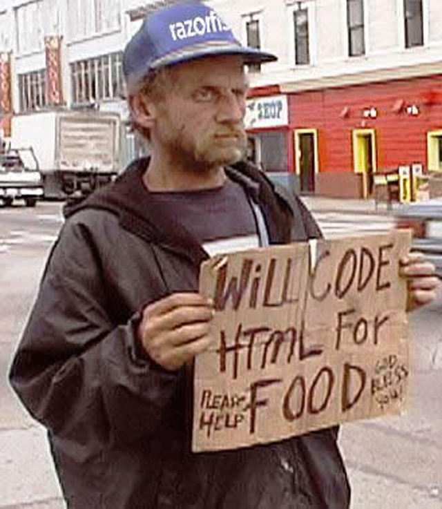

Программирование — наука
Программирование — наука
Логика
- Дискретная математика
Лежали в основе информатики.
- Криптография
Испытала расцвет благодаря компьютерам. решает задачи защиты информации: скрытие, защита от подделки
Программирование — наука
Как только появились компьютеры, люди были поражены их вычислительной мощью. Но они подходили только для задач, сводившихся к большому количеству простых вычислений.
- базы данных
- расчёты
Обнаружились задачи, с которыми справляется ребёнок, но сложные для компьютера.
- отличить собаку от кошки по фото
- прочитать текст
- Задачи искусственного интеллекта
- Кластеризация и классификация
- Распознавание образов, речи
- Компьютерное зрение
- Чат с человеком (тест Тьюринга)
- Нейронные сети
Программирование — наука
- Вождение автомобиля
- далеко продвинулся в этом деле Гугл
Программирование — наука
- Computer Science
- Теория алгоритмов
- Формальные грамматики
- Теория языков программирования
Программирование — ремесло
Отрасли IT
- ПО рабочих станций
- Прикладное
- Системное
- Операционные системы
- Мобильные устройства
- Игры
Отрасли IT
- Базы данных
- Информационная безопасность
- Аппаратное обеспечение
- Робототехника
Отрасли IT
- Телекоммуникации
- Интернет
- Сервер
- Высокие нагрузки и большие данные
- Веб: сервер и клиент
Роль программирования в науках
- Проведение экспериментов и обработка результатов
- Сложные расчёты
- Визуализация данных
- Моделирование
- ...
Программирование в науках
Математика
- Физика
В 2011 году Яндекс предоставил ЦЕРНу свои сервера. В первом квартале 2012 года вычислительные ресурсы Яндекса составили 13% от объема вычислительных мощностей, используемых в рамках эксперимента LHCb.
В 2012 году специально для ученых, которые проводят эксперименты на Большом адронном коллайдере, Яндекс разработал поисковый сервис. Он ищет по тысячам терабайт данных о столкновениях частиц в коллайдере.
- Биология и медицина
Компьютерная томография
- Folding@home
Проект распределённых вычислений для проведения компьютерного моделирования свёртывания молекул белка. Цель проекта — с помощью моделирования процессов свёртывания/развёртывания молекул белка получить лучшее понимание причин возникновения болезней, вызываемых дефектными белками, таких как Альцгеймера, Паркинсона, диабет типа II, болезнь Крейтцфельдта — Якоба (коровье бешенство), склероз и различных форм онкологических заболеваний.
- Космические исследования
- ПО космических аппаратов
Программирование в науках — инструменты
- Matlab, Maxima, Octave, Maple, MathCad
- Gnuplot
- R
- Языки общего назначения
- Функциональное программирование
- ...
Другие области
- Автомобильная промышленность
- Проектирование
- Расчёт характеристик
- Моделирование
- Эксплуатация
- Бортовые компьютеры
- Прошивки управляющих систем
- Системы автопарковки
- Кинематограф
- Анимация
- Визуальные эффекты
- Биржевые торги
- Сверхбыстрые торги
- «Умный дом»
- ...
Программирование — исскусство
64k